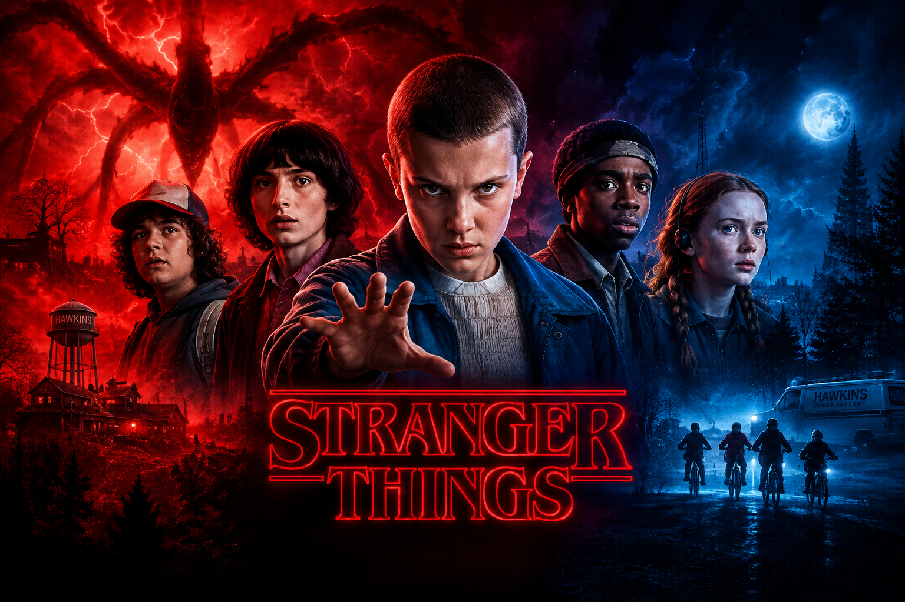

Em uma pequena cidade de Indiana, o desaparecimento de um garoto revela um mundo sombrio e sobrenatural, dando início a uma aventura envolvendo criaturas, mistérios e o Mundo Invertido.
SAIBA MAISGênero: Ficção científica, suspense e terror
Criadores: Matt Duffer e Ross Duffer
Ambientação: Hawkins, Indiana
Estreia: 2016

Sobre Stranger Things
Stranger Things é uma série de ficção científica e suspense criada pelos irmãos Duffer. A história se passa principalmente na cidade fictícia de Hawkins, nos Estados Unidos.
A trama começa quando Will Byers desaparece misteriosamente, fazendo com que seus amigos iniciem uma busca para encontrá-lo. Durante essa procura, eles conhecem Eleven, uma garota com habilidades sobrenaturais.
Ao longo da série, os personagens enfrentam criaturas, experimentos secretos e acontecimentos relacionados ao Mundo Invertido, enquanto tentam proteger a cidade e seus amigos.
Personagens
Personagens principais
- Eleven
- Mike Wheeler
- Dustin Henderson
- Lucas Sinclair
- Will Byers
Top 5 Personagens
- Eleven
- Steve Harrington
- Dustin Henderson
- Hopper
- Mike Wheeler
Temporadas
| Temporada | Ano | Episódios |
|---|---|---|
| 1ª | 2016 | 8 |
| 2ª | 2017 | 9 |
| 3ª | 2019 | 8 |
| 4ª | 2022 | 9 |
Galeria
Curiosidades
- A série foi criada pelos irmãos Matt e Ross Duffer.
- A história se passa principalmente na cidade fictícia de Hawkins.
- O Mundo Invertido é uma das principais partes da história.
- A série possui referências à cultura dos anos 1980.